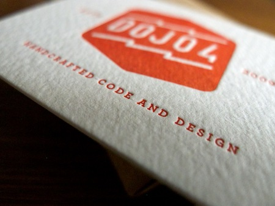
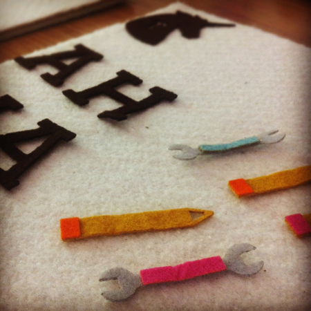
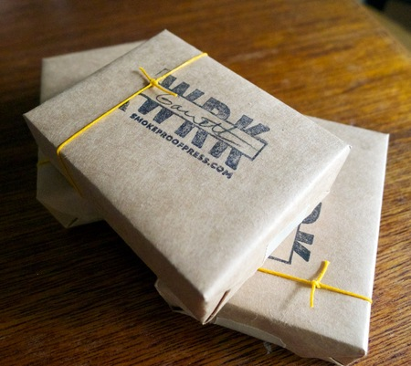
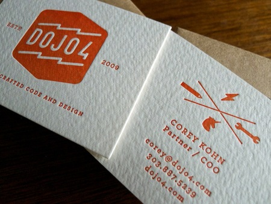

Upon pondering the redesign of our visual identity here at dojo4, I reflected on the art guilds of renaissance Italy and other artisan workshop models. After all, everything we create here is customized to serve the needs and aspirations of the patron. For instance, Da Vinci's marketing brochure boasted of 36 services his workshop could offer a potential patron. It is from that devotion to breadth and attention to craft that we take our cue.

During the renaissance era there was an technological boom that was unprecedented in Western European history. I suspect Boulder is in the midst of such a technological and cultural boom. One area we should continually nourish is a commitment to making Boulder beautiful and elegantly designed. Much of the media focus is turned towards our burgeoning tech community and the athletic community that has grown up around our inherited outdoor playground. In addition to these widely-publicized traits, Boulder must continue on the path of providing a thriving art and design scene. For my part, I sorely wish to take part in the continued nourishing of art and design in Boulder. In this spirit, I have taken the position as Creative Director at dojo4.com.
I have served in a variety of technological and aesthetic positions at a unusual range of organizations. I have served at Vermilion, Jean-Michel Cousteau's Ocean Futures Society, a UN non-proliferation think tank, Tendril, and have found a new home at dojo4. My background in illustration, music, technology and design will hopefully serve our studio well.
We continually strive to be a community resource and 'one chop shop' that provides initial consultation all the way through execution. I want the office and brand to have the feel of a trusted community resource. When I was growing up, we commonly visited the local service station, the neighborhood machine shop, the grocer. Doing design and software has the same flavor for me. We are here to serve the Boulder community and to help beautify our civic environment.
We commissioned our lovely felt project management board from @mlkshkmlkshnk and our new letterpress business cards from Smokeproof Press. We are loving the artisan textures of the collateral and the grounding feeling that handmade objects afford. Worktables created by McCord Wood + Steel are currently gracing our public space. These are being borrowed from the magnificently talented folks over at Goodapples.
We run an open office, so please stop in and say hello. We also host design meet-ups frequently, so please feel free to get ahold of me if you would like to join us. Bring ideas that will benefit not only the Boulder tech and design scene, but also the community at large.


